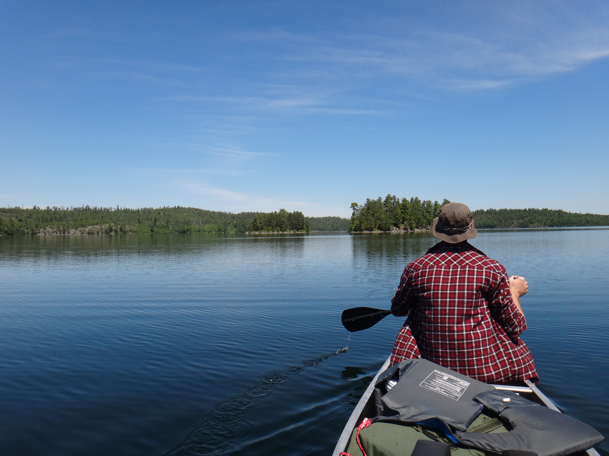

{
const moduleURL = new URL("home-assets/explorer.js", document.baseURI);
const { createExplorer } = await import(moduleURL.href);
return createExplorer(html);
}Konnor Herbst
Konnor Herbst
PhD Student in Biostatistics @ Duke University

Co-advised by Nikki Freeman and Roland Matsouaka | CV ·
I love statistics because it forces us to think carefully about what can make or break our “data-driven” conclusions. With LLMs, it’s easier to produce a convincing analysis without much understanding of the methods behind it. That has some people questioning the future of statistics but I think it makes statistical thinking even more important. Fitting models is one thing, but figuring out what their results actually tell us is another. Are we answering the questions we care about? Do our conclusions hold up when our assumptions fail? What can we really say given how the data were collected? And how do we explain our findings so people can understand and use them?
These are the questions that interest me most as a statistician. On this site, you’ll find more about how I’m exploring them through my research and a growing collection of statistics notes I’m putting together along the way.
Recent news
- November 2026
- Launched this website.
- September 2026
- Began an NIH/NHLBI T32 training fellowship in cardiovascular biostatistics at the Duke Clinical Research Institute (DCRI)
- January 2026
- Presented at the Statistics for Novel Clinical Trial Designs Conference.
- September 2025
- Began a Clinical Biostatistics Research Fellowship at the Duke Clinical Research Institute (DCRI)